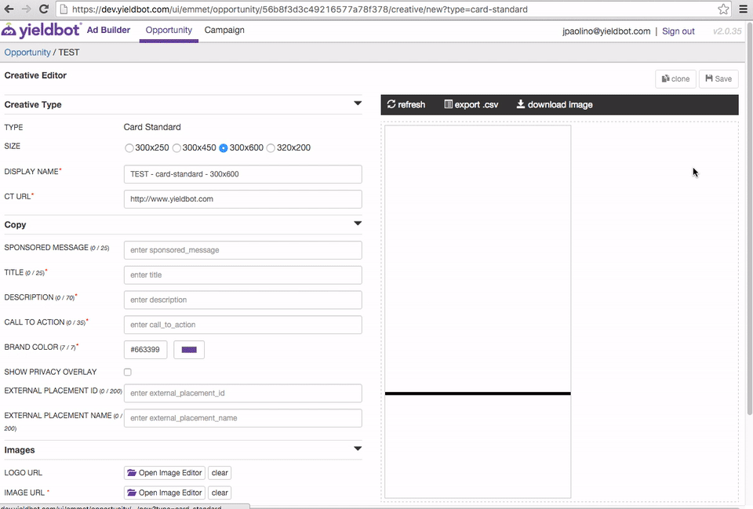

In addition to designing the display advertisements that Yieldbot ran across publisher sites, I also designed the interface where account managers could customize these ads for sales pitches.

The biggest challenge was the layout. The ads came in all different sizes and orientations but it was essential to the users to be able to preview the ad live as they edited.